SOP Aktivasi & Pemasangan Baru (Radius Netvora)
Panduan teknis langkah-demi-langkah khusus untuk Tim IT internal perusahaan.
1 Langkah 1
Contoh Data yang dikirimkan oleh Tim Teknisi.
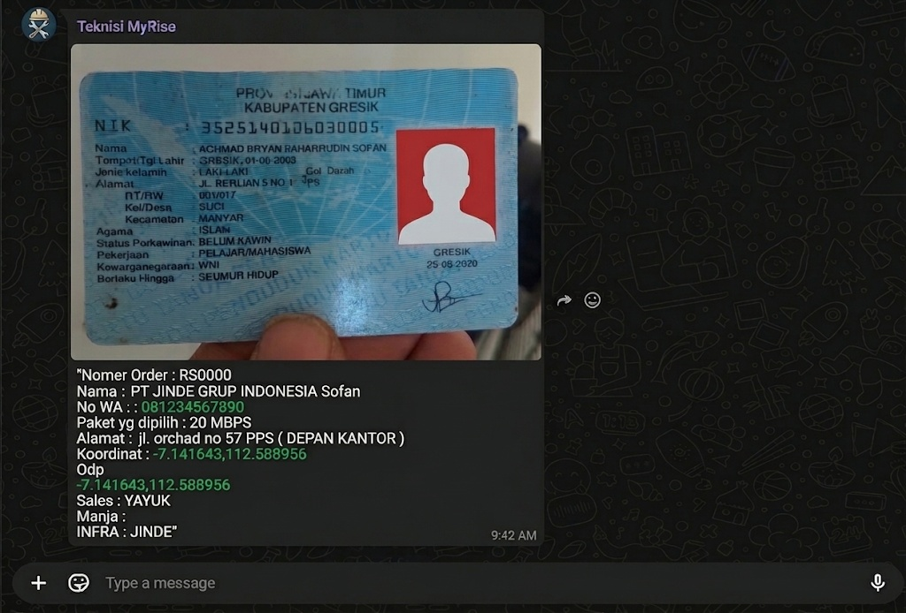
2 Langkah 2
Apabila data sudah diterima dari tim teknisi, kemudian input data tersebut ke spreasheet https://docs.google.com/spreadsheets/d/1VO9gmIPUFeFzIJ42iufT55Q0kQGtI9nZ/edit?usp=sharing&ouid=102221158458589343481&rtpof=true&sd=true .
Noted : NAMA SESUAI KTP
ALAMAT SESUAIKAN ALAMAT PEMASANGAN ( BUKAN ALAMAT KTP )
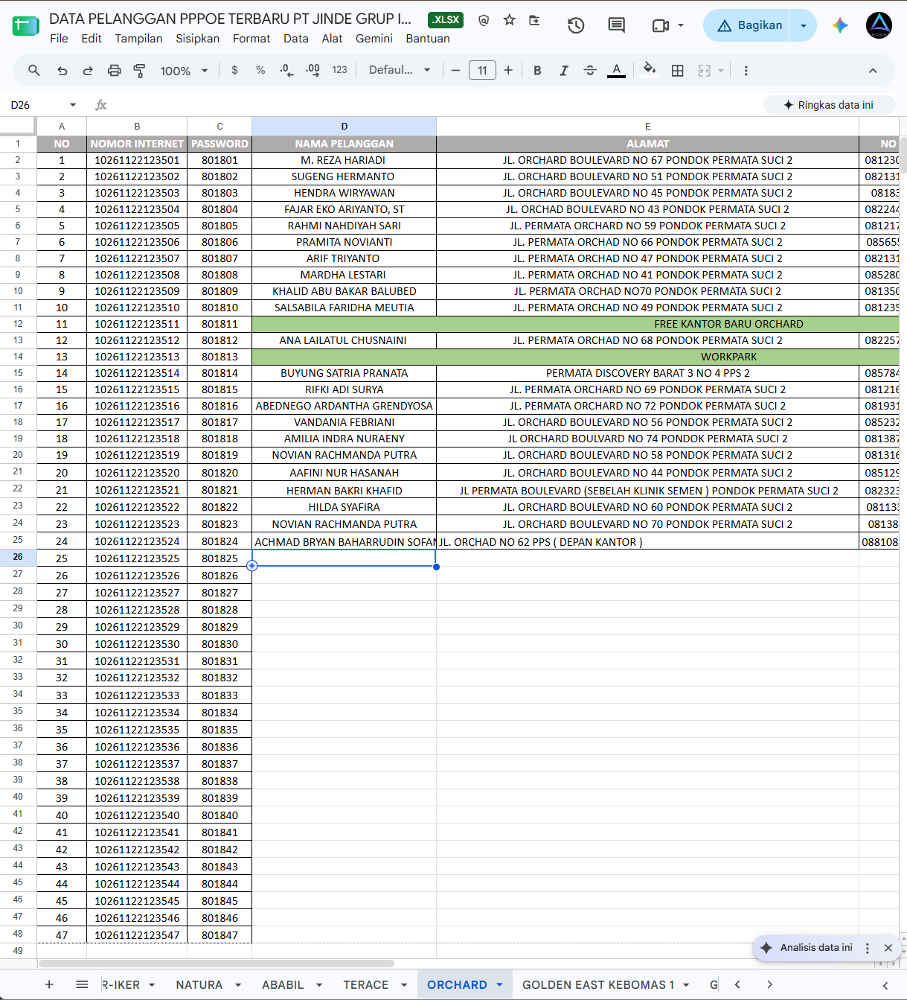
3 Langkah 3
Buka WEB Radius Netvora ID https://radius.netvora.id/adminrad, Login username dan password kemudian ke menu tambahkan kontrak berlangganan dengan cara berikut :
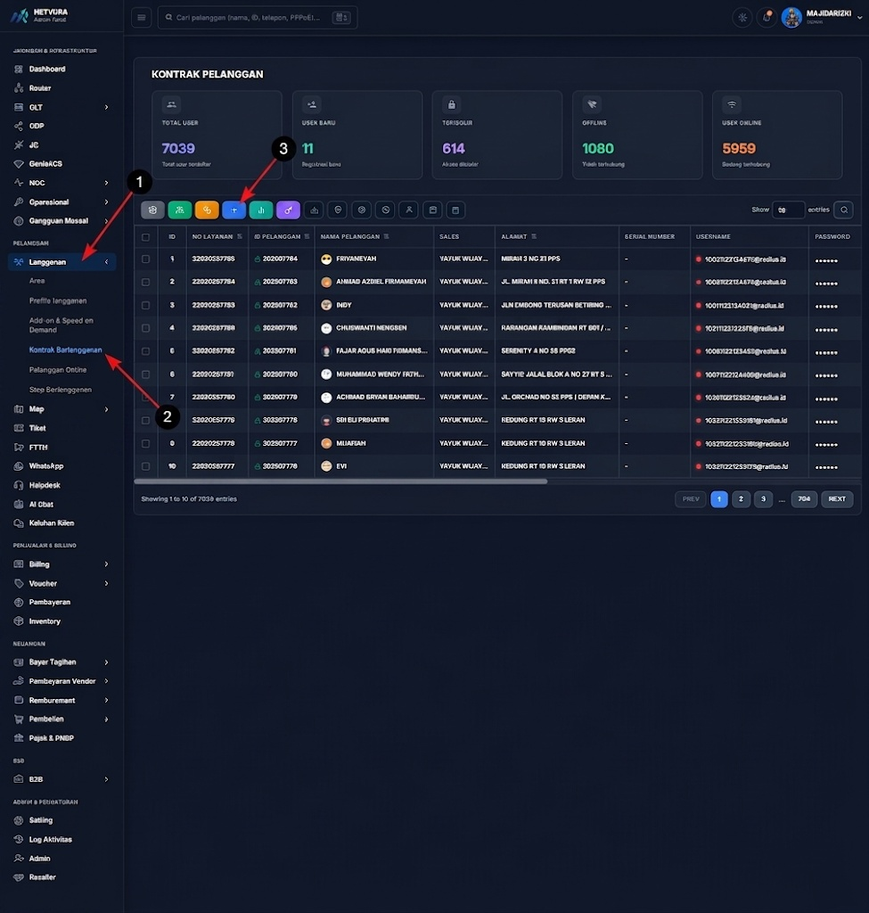
4 Langkah 4
Klik + Daftar Baru yang ada pada tanda petunjuk.
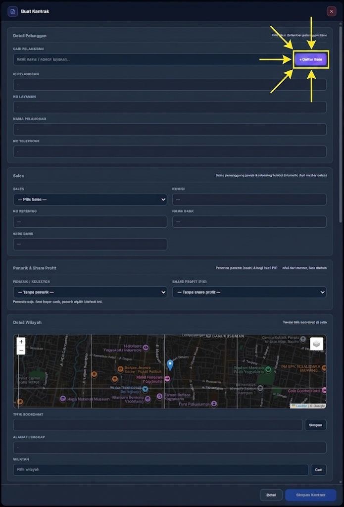
5 Langkah 5
Klik + Add Pelanggan. disini kita tambahkan data pelanggan terlebih dahulu sebelum membuat kontrak berlangganan
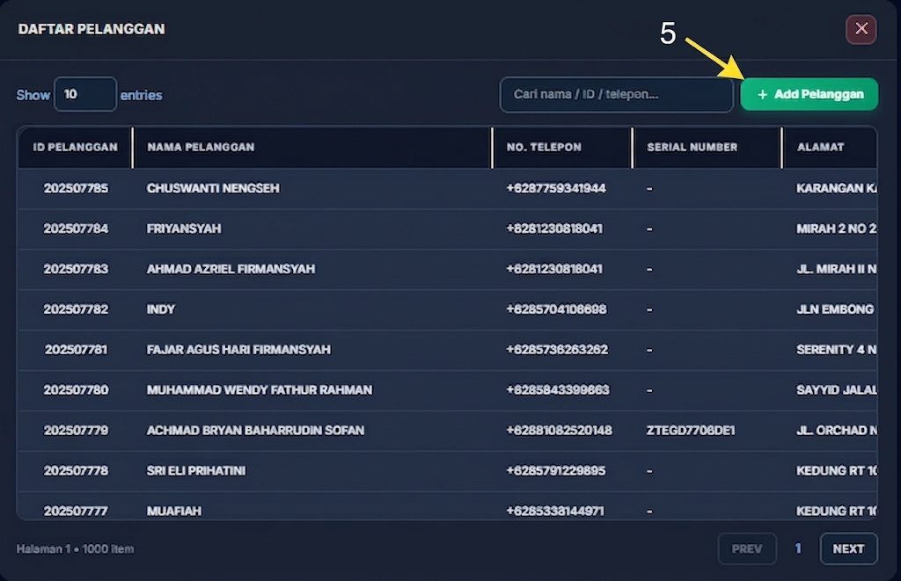
6 Langkah 6
Isi dan Masukkan data pelanggan sesuai data yang sudah di input di spreadsheet sebelumnya. sudah sudah lengkap klik Simpan
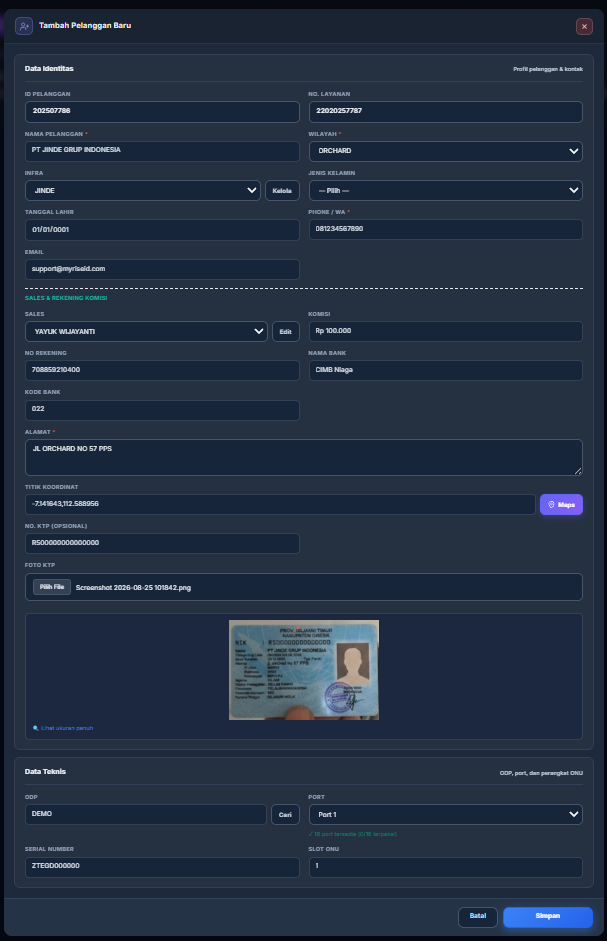
7 Langkah 7
Pada menu ini kita sudah masuk dalam menu untuk menambahkan data kontrak berlangganan, disini yang wajib diperhatikan yaitu Nomor Internet , Password , Paket Order, Sales , SN dan juga Router ( untuk Waktu dan Tanggal Registrasi tidak perlu dirubah karena sudah otomatis terhitung per hari ini ).
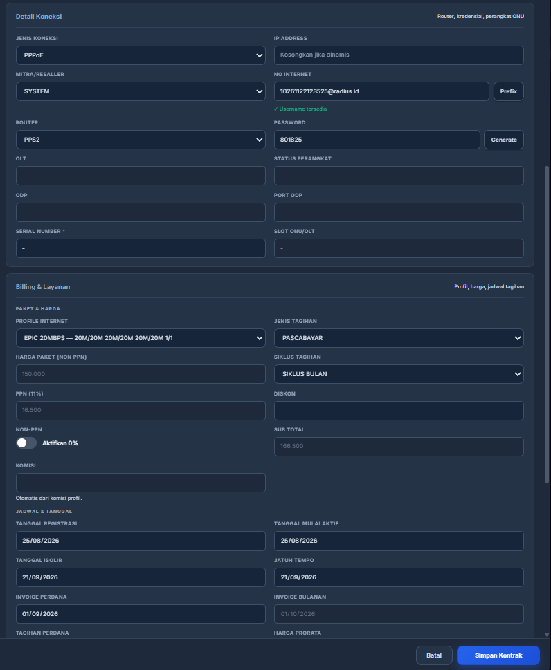
8 Langkah 8
Isi deskripsi atau teks panduan untuk langkah ke-8 di sini.
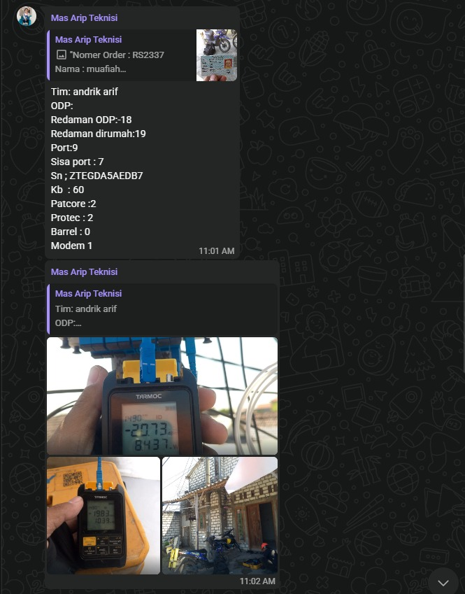
9 Langkah 9
Isi deskripsi atau teks panduan untuk langkah ke-9 di sini.

10 Langkah 10
Isi deskripsi atau teks panduan untuk langkah ke-10 di sini.

11 Langkah 11
Isi deskripsi atau teks panduan untuk langkah ke-11 di sini.

12 Langkah 12
Isi deskripsi atau teks panduan untuk langkah ke-12 di sini.

13 Langkah 13
Isi deskripsi atau teks panduan untuk langkah ke-13 di sini.

14 Langkah 14
Isi deskripsi atau teks panduan untuk langkah ke-14 di sini.

15 Langkah 15
Isi deskripsi atau teks panduan untuk langkah ke-15 di sini.

STATUS DYING GASP
Kondisi ketika perangkat modem/ONT mati karena kehilangan pasokan listrik secara mendadak (mati lampu atau kabel power terlepas). Saat daya mati, kapasitor modem mengirim pesan pesan darurat (gasp) terakhir ke OLT sebelum benar-benar padam.
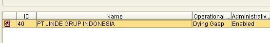
STATUS LOSS
Kondisi ketika modem kehilangan sinyal optik dari jaringan fiber. Masalah ada pada jalur kabel optik (kabel putus, tekukan tajam, atau konektor kotor/lepas), meskipun modem sendiri masih menyala.
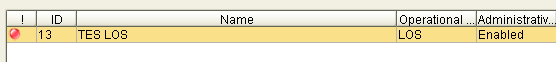
STATUS ONLINE
Kondisi normal di mana modem terhubung, menerima sinyal optik dengan baik, dan dapat bertukar data secara aktif dengan OLT.
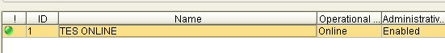
STATUS OFFLINE
Status Offline pada OLT ZTE NetNumen terjadi karena komunikasi antara OLT dan modem/ONT terputus, yang dapat disebabkan oleh modem mati, kabel optik putus, redaman tinggi, atau registrasi SN yang hilang. Jika modem dibiarkan mati selama 3–6 bulan, konfigurasi/registrasinya berpotensi terhapus otomatis atau perangkat mengalami freeze, sehingga perlu dilakukan pengecekan dan registrasi ulang agar dapat kembali Online. .
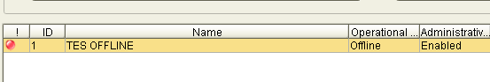
STATUS SYNKRONIZE
Status Synchronized (atau Syncing) yang mengalami stuck menandakan bahwa modem sedang berulang kali mencoba melakukan negosiasi sinyal kendali (OMCI) ke OLT tetapi gagal menyelesaikan proses pengikatan jaringan secara penuh. Kondisi menggantung pada tahap sinkronisasi ini umumnya disebabkan oleh besarnya redaman optik yang membuat sinyal data terputus-putus, ketidakstabilan tegangan dari adaptor daya yang rusak, atau kerusakan fisik pada komponen modul optik modem itu sendiri.
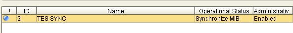
CARA PROGRESS TIKET
Isi panduan atau alur cara pengerjaan dan perupdate-an progress tiket penanganan gangguan di sini.

CARA AKSES / REMOTE ONT CLIENT FTTH
Isi langkah-langkah tata cara remote modem/ONT milik client FTTH dari jaringan internal IT di sini.